Idle
Pick a scenario and run.

Same data, sequential runs — points, clusters, unified heat field, isolines, GeoJSON, markers, chart popups, filter, live updates, pick and basemap across Orihon, Leaflet, OpenLayers and MapLibre.
Idle
Pick a scenario and run.